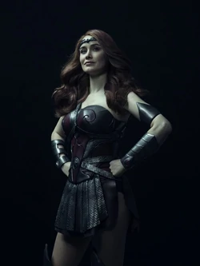

Queen Meave
Dominique McElligott como Maggie Shaw / Queen Maeve, una miembro veterana de los Siete con gran fuerza física. Aunque una vez quiso proteger vidas inocentes, se ha desilusionado y sufre de agotamiento y estrés postraumático. Secretamente, todavía está unida románticamente a su exnovia, que actúa como su confidente. Homelander la saca del armario en la televisión en un intento de intimidarla.